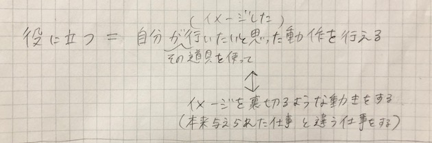
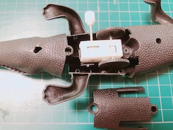
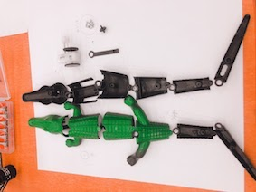

Toy hacking
『Reverse running crocodile』ができるまで
取扱説明書
①自分にとっての「役に立つものとは何か」を考えた

②百均でワニのおもちゃを買った
③ワニのおもちゃを分解し、ぜんまい式の機構を発見


④「ぜんまいを巻くと前方に進むおもちゃ」を役に立たなくするために、
ぜんまいを逆向きに設置し直すことで「ぜんまいを巻くと後方に進むおもちゃ」を作った
＜動作の様子＞
＜おまけ＞（制作途中でできた変なモノたち）
No1.回転するワニ
No2.線を書くアヒル